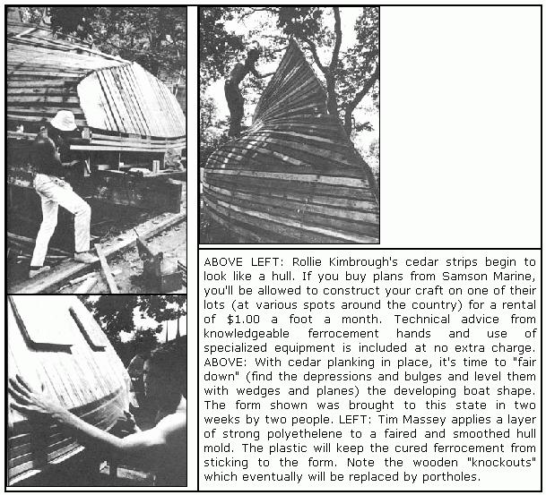
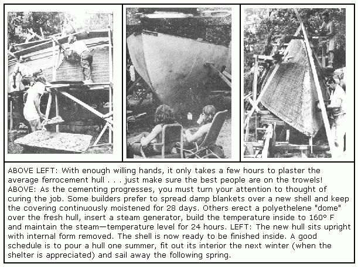

Back-to-the-land may be fine for most . . . but it's not enough for the folks who dream of shucking everything and sailing away for the South Seas. But why dream? If you've been indulging a private ocean fantasy, indulge no more. Trade that castle (or yawl or ketch or schooner) in the air for the real thing and sail on.
PHOTOS BY ANDREW SCHNEIDER/COVER
Building a concrete boat may sound pretty freaky . . . but it works and the job is easier than you might think. The finished craft has some real advantages over conventionally constructed boats too: it won't rust or rot, sharp rocks don't punch holes in it and the vessel just keeps on getting stronger for the next 30 years or so!
What you do is build a wooden frame in the shape of the boat you want, tack on several layers of chicken wire and metal rods . . . and then cement over all your mistakes (you'll have a lot more leeway with this process than if you were working with wood or fiberglass). Once the reinforced or "ferro" cement sets up, you'll have a seaworthy hull that's both dirt-cheap and virtually maintenance-free. And, if you keep the thickness of the troweled-on pour of cement down to less than an inch (which provides plenty of strength), the shell will weigh about the same as a similar hull constructed of wood.
The ferrocement process seems ideally suited for that large boat you never thought you could afford. Pool your spare change and weekends with a few friends and you can build the hull of a 36-foot fishing boat in 700 man-hours for a materials cost of less than a grand! Or bring in a 50-foot work boat hull-with deck and bulkheads-for less than 2,000 man-hours and about $4,000.
This all sounds pretty implausible and it was . . . until the idea of constructing watercraft from concrete was rediscovered in the 1940's by an Italian engineer named Nervi. The concept was later picked up by some New Zealand experimenters and brought to North America by John Samson when he established a ferrocement design and supply business in Canada. Several hundred-if not thousand-such vessels have now been launched or are currently abuilding on this continent.
Almost any watercraft-sloops, ketches, cutters, power cruisers, tugs, trawlers, houseboats, you name it-can be built from ferrocement. If you're boat-wise and already know something about this construction technique, you can probably adapt regular boat plans to the process. Otherwise you may want to buy drawings and instructions tailored specifically for ferrocement. John Samson still seems to be the best source for such information and he can be reached at:
Samson Marine Design Enterprises, Ltd.
833 River Road
Vancouver, B.C.
Canada
Ask for information on his ferrocement plan package service.
Yes, it seems certain that ferrocement boats are here to stay . . . still, a few words of caution are in order before you dash off to "pour your own".
Many experts in the field advise against using the process on very small designs-say an 18-foot boat-because the thin-hulled craft that result are not (in the experts' opinion) seaworthy. We know of several people who've constructed exactly such designs, however, and they have no complaint. Then again, they weren't amateurs either.
It should also be noted-even when constructing a bigger ferroconcrete craft-that the final cementing: plays a very critical part in determining the ultimate strength of the vessel. If you can find the cash to hire a professional plasterer to do the job, by all means do so.
Now, with those warnings out of the way, turn the page to see just how ridiculously easy it really is to pour your own boat.
|
 |
|
 |